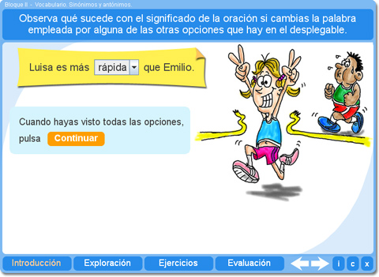
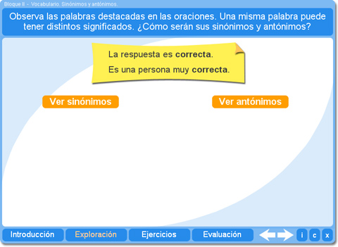
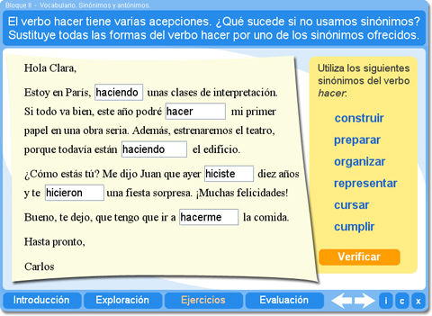
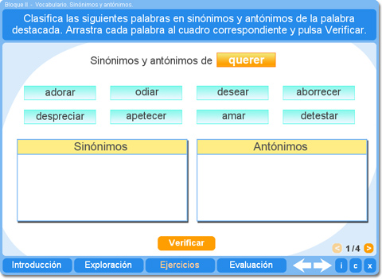
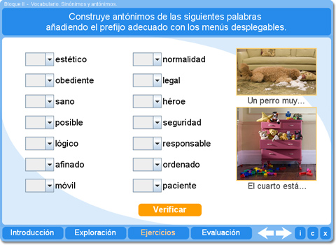
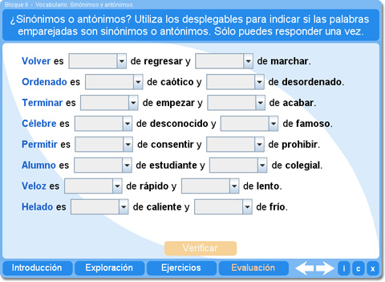

Objetivo
Enriquecer el vocabulario del alumno practicando el uso de sinónimos y antónimos.
Instrucciones generales
Se puede navegar entre los apartados con el menú de la parte inferior. Este menú aparece a lo largo de todo el interactivo y conserva su funcionalidad.

También se puede navegar por las escenas por medio de las flechas de navegación que aparecen en el lado inferior derecho del interactivo. Dentro del apartado Ejercicios es necesario utilizar estas flechas para acceder a las escenas sucesivas de dicho apartado.

En la parte inferior derecha del interactivo se encuentran los siguientes botones:
| Muestra la documentación del interactivo. | |
| Despliega los créditos correspondientes a este interactivo. | |
| Cierra el interactivo. |
Contenidos
Introducción
Ilustra el efecto que tiene en el significado de una oración el hecho de reemplazar una palabra por su sinónimo o su antónimo.

Exploración
Permite ampliar conocimientos acerca de los sinónimos y antónimos, en especial en el caso de palabras con distintas acepciones.

Ejercicio 1
Este ejercicio permite ver la importancia de usar sinónimos para enriquecer el lenguaje. El alumno debe escoger el sinónimo adecuado para las distintas acepciones del verbo hacer.

Ejercicio 2
El alumno puede ejercitar la identificación de sinónimos y antónimos respecto a una palabra de referencia.

Ejercicio 3
El alumno puede practicar el uso de prefijos para construir antónimos.

Evaluación
El alumno puede valorar sus conocimientos acerca de los sinónimos y antónimos.

| Los materiales aquí presentados utilizan el applet Descartes Web 2.0. | |

|
Los contenidos de esta unidad didáctica están bajo una licencia de Creative Commons. |